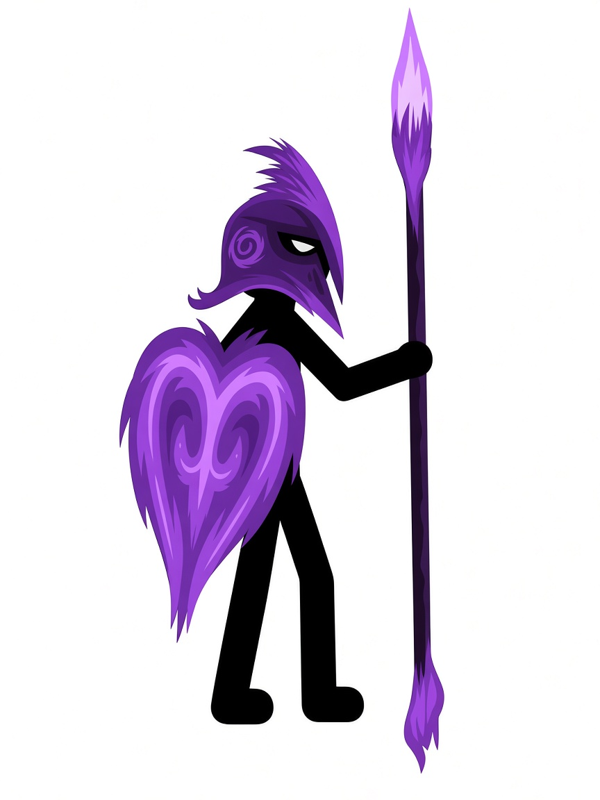
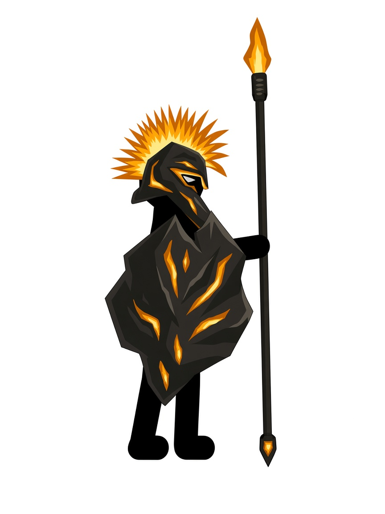
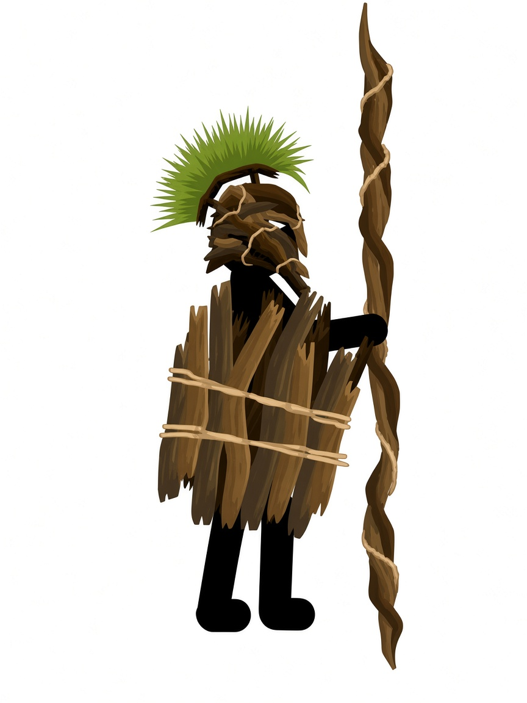

СПАСТИ НАПАРНИКА
Проберись в форт. Освободи ковбоя.Потом пройди лабиринт Хранителя.
По твоему рисунку. Теперь герои двигаются.
ВЫБЕРИ ОБЛИК
Три пути. Один станет твоим. Другие останутся в лабиринте.



ЧТО УНЁС С СОБОЙ
Здесь лежит то, что ты нашёл: Маг, дар Хранителя и пасхалки.